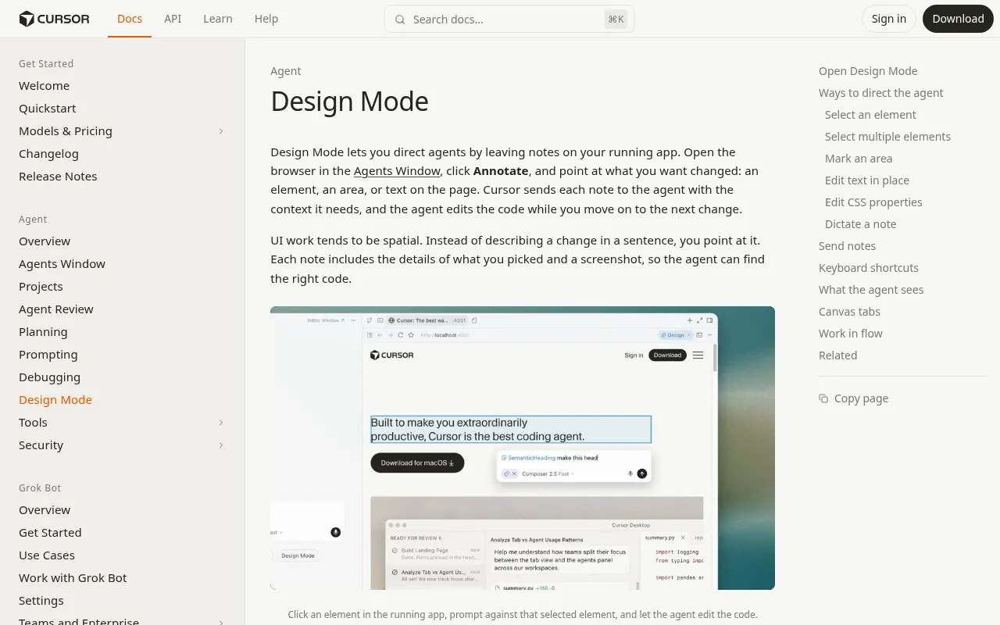
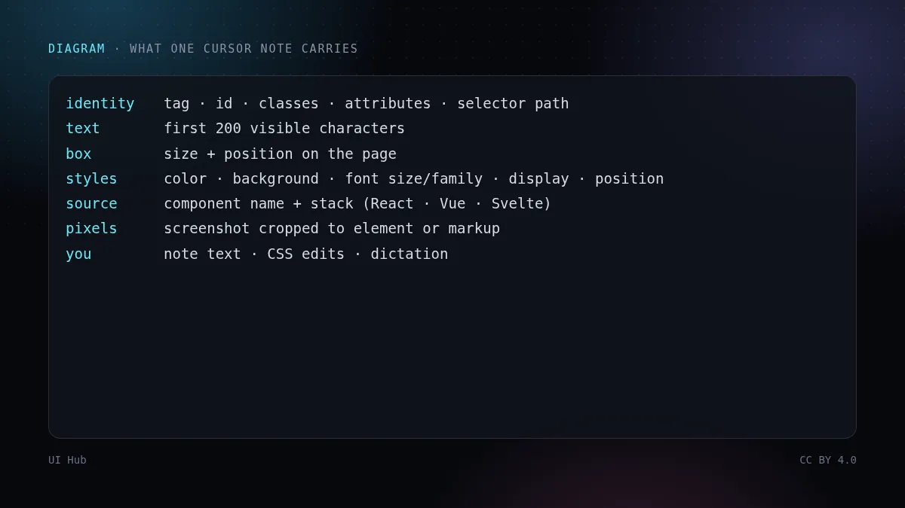
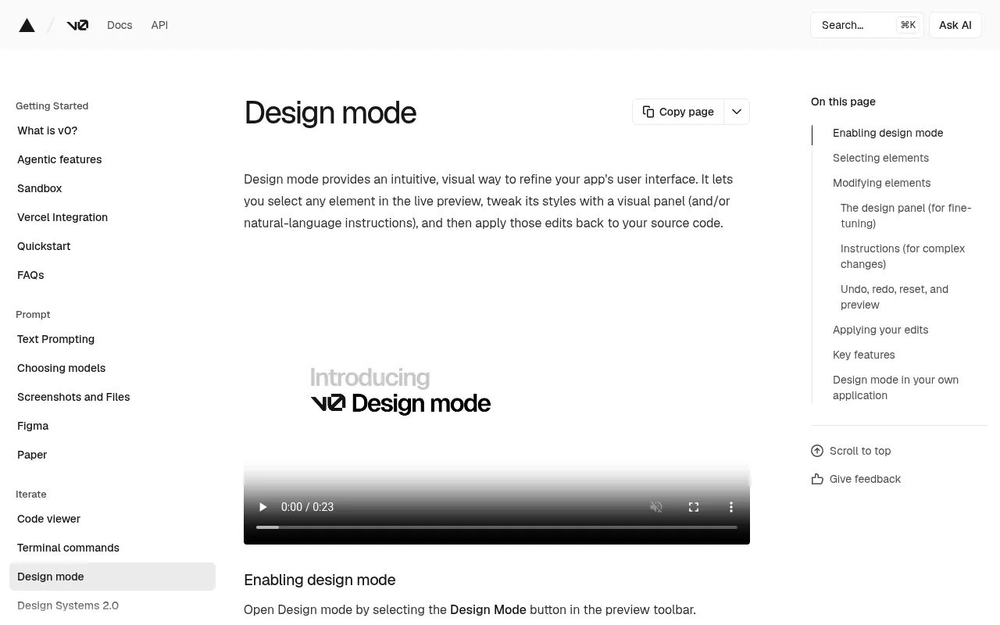

「把第二张卡片改得和第一张一样，但更紧凑一点」——这句话对编码智能体来说很难。哪张是第二张？怎么个紧凑法？智能体只能在代码里找一个长得像你描述的东西，猜错了，你写的纠正往往比原来的请求还长。10 月 27 日，Cursor 推出了 Annotate，这是它浏览器里 Design Mode 的改版：你可以直接在运行中的应用上「指」来回答这些问题。v0 和 Lovable 也有各自的版本。放在一起看，可以发现：做界面时，好用的提示正在从「一段话」变成「一个指向 + 一个小改动」。

Cmd/Ctrl + Shift + D 打开。你可以点选元素（方向键可把高亮移到父级或子级），Shift 点击把更多元素加进同一条批注，拖拽框选区域并用画笔、椭圆、矩形或箭头标注，双击文字原地修改，对单个元素打开 CSS 检查器，或者直接语音口述。每个被选中的元素，智能体都会收到：标签、id、class、属性、选择器路径、前 200 个可见字符、尺寸与位置、六项计算样式（颜色、背景色、字号、字体、display、position）；在 React、Vue、Svelte 应用里还有组件名和组件栈。另外还有一张裁到该元素或你标注区域的截图。批注默认逐条发送；打开 Batch edits 开关后，批注会以编号图钉的形式攒起来，一次作为一条消息发出。Cursor 建议这类循环用速度快、擅长界面的模型，点名了 Composer 2.5。
三者的分界线是：工具是自己执行你的视觉改动，还是把它翻译给智能体？v0 最接近设计工具：面板改的是具体数值，结果是一个可审阅的版本，模型主要负责把它写进源码。Cursor 和 Lovable 把你的标注当作上下文：改哪段代码仍由智能体决定，但它从正确的组件出发，而不是靠猜。Cursor 给的上下文最丰富——除了像素还有结构化的元素数据和组件栈——所以它能在大型现有代码库里工作，而不只是在生成出来的项目里。
「指」有两个盲区。第一，一条批注只记录某个宽度下的一个定格状态。智能体看到的是你在 1440 px 下圈出的悬停态，看不到空状态、错误态或 375 px 布局，而且会很乐意只修它看到的那一个。Cursor 的发布说明提到可以在不同屏幕尺寸下检查设计，但检查这件事仍然是你的。第二，直接操作产生的是裸数值。在检查器里把内边距拖到 18 px、选了 #3b82f6，你就写下了一个设计系统不认识的一次性值。v0 的 Tailwind 取值有帮助，但这几个工具都没有承诺把改动映射到你的 Token。要明确告诉智能体这么做，事后再用 Lint 查。
我们的经验法则：用「指」说明在哪里，用文字说明为什么。标注给位置，句子给意图和边界。「把这张卡片的间距改成和左边那张一致，用我们的间距 Token，文案别动」比单独一幅涂鸦或一段话都好。
# 一条好用的可视化批注（目标 + 意图 + 边界）
target: PricingCard[plan="Pro"] + PricingCard[plan="Team"] # 多选
change: 让 Team 和 Pro 一致：相同内边距、相同徽章位置
use: 内边距用 --space-6，Badge variant="outline"
keep: 文案、价格、按钮文字
check: 375px 堆叠、暗色模式、CTA 焦点环
只有当智能体有 Token 可映射时，「指」出来的改动才不会跑偏。给智能体的设计 Token 讲了怎么把它们写下来，用 Lint 把智能体拉回你的设计系统 讲了怎么抓住可视化编辑产生的一次性数值。工具本身见 v0 实战 和 Lovable 与 Bolt；单条批注看不到的那些状态，见 AI 生成界面的无障碍。